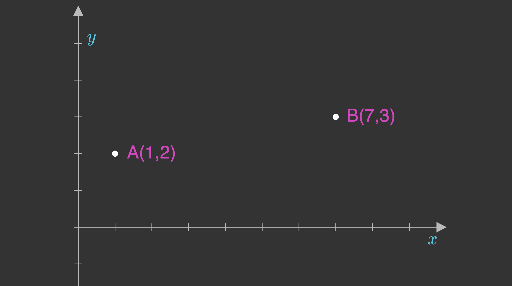
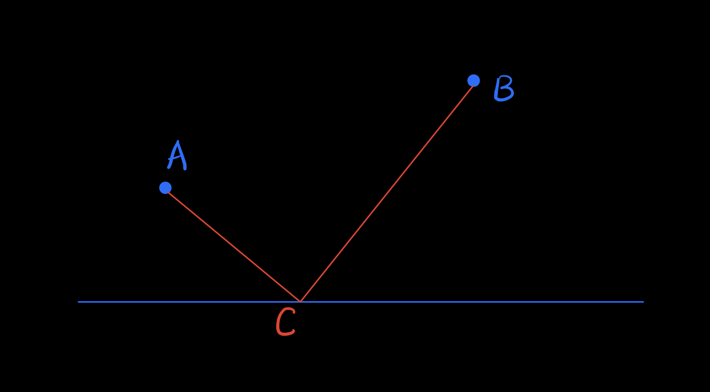
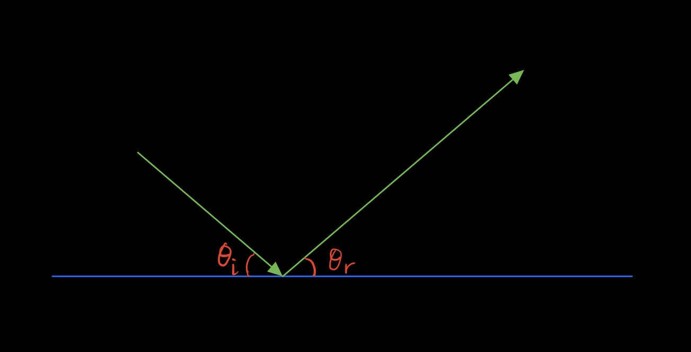
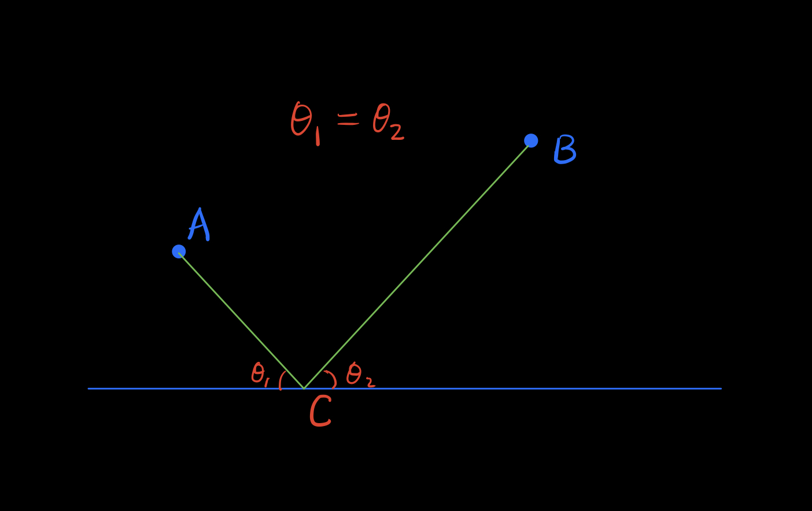
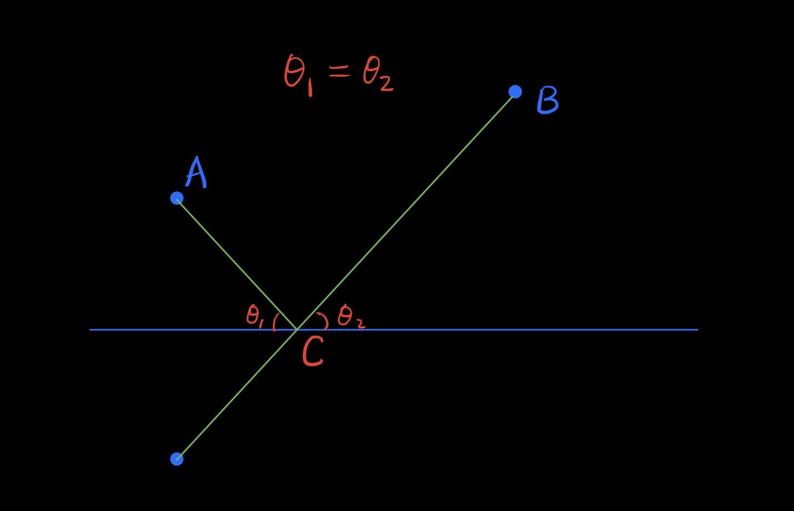
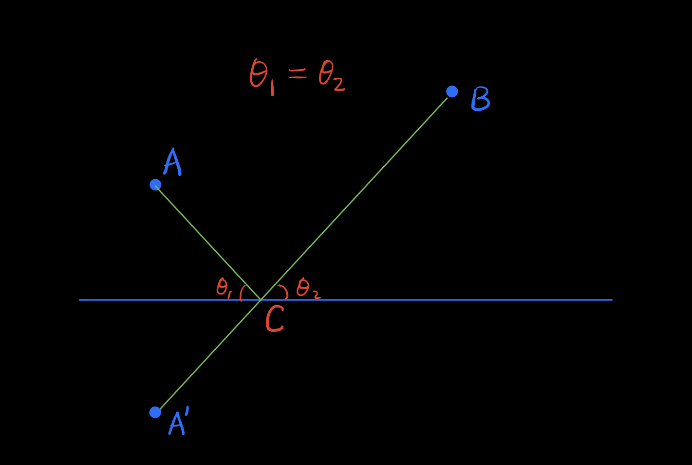

Find
the shortest distance from $A$ to $B$
that touches $x$-axis and $y$-axis
the shortest distance
from $A$ to $B$
A straight line is the shortest distance between two points.
Triangle Inequality
From the wiki page

Heron's Shortest Distance Problem
Given two points $A$ and $B$ on one side of a line,
find $C$ a point on the straight line, that minimizes
\[AC+BC\]

Euclid's Law of Reflection
The angle of incidence is always equal to the angle of reflection.

Heron's Shortest Distance Problem
Given two points $A$ and $B$ on one side of a line,
find $C$ a point on the straight line, that minimizes
\[AC+BC\]

Heron's Shortest Distance Problem
Given two points $A$ and $B$ on one side of a line,
find $C$ a point on the straight line, that minimizes
\[AC+BC\]

Heron's Shortest Distance Problem
Given two points $A$ and $B$ on one side of a line,
find $C$ a point on the straight line, that minimizes
\[AC+BC\]

$C$ is the intersection of $BA'$.
Numerical Experiement
\[ \min (AC+CB) = \sqrt{(7-1)^2 + (3+2)^2} =\sqrt{61} = \approx 7.8102\]
Proof - Conceptual
\[AC = A'C\]
\[AC+BC \ge A'B\]
Find
the shortest distance from $A$ to $B$
that touches $x$-axis and $y$-axis
Answer
Thank You!
Like, Share, and Subscribe!
Start the new year with
2023 Number Challenges

Please suggest your questions!
Diophantine Equations
Solve
\[\sqrt{x}+\sqrt{y} = \sqrt{2023}\]
Diophantine Equations
\[\sqrt{x}+\sqrt{y} = \sqrt{2023}\]
\[\sqrt{x} = \sqrt{2023}-\sqrt{y}\]
Diophantine Equations
\[\sqrt{x}+\sqrt{y} = \sqrt{2023}\]
\[\sqrt{x} = 17\sqrt{7}-\sqrt{y}\]
\[ x = 2023 - 34\sqrt{7y}+y\]
\[ 7|y, y=7m^2\]
Use similar arguments, $7|x, x=7n^2$
Diophantine Equations
\[\sqrt{x}+\sqrt{y} = \sqrt{2023}\]
\[x=7m^2, y=7n^2\]
\[ \sqrt{7}m +\sqrt{7}n = 17\sqrt{7}\]
\[ m +n = 17\]
\[ x = 7m^2, y = 7(17-m)^2 \]
for $m = 0, 1, \cdots, 17$
Diophantine Equations
\[\sqrt{x}+\sqrt{y} = \sqrt{2023}\]
\[ x = 7m^2, y = 7(17-m)^2 \]
for $m = 0, 1, \cdots, 17$
Thank You!
Like, Share, and Subscribe!
Diophantine Equations
Find
all Pythagorean triples that contain 2023 \[a^2+b^2=2023^2\]
or\[a^2+2023^2=c^2\]
Pythagorean Triple
Three positive integers $(a, b, c) $, such that \[a^2 + b^2 = c^2\]$(3, 4, 5), (6, 8, 10), (5, 12, 13)$
Primitive Pythagorean Triple
$(3, 4, 5), (5, 12, 13)$
$(8, 15, 17), (7, 24, 25), (20, 21, 29)$
Primitive Pythagorean Triple
The primitive Pythagorean Triple is given by \[ x=2mn, y=m^2 −n^2, z=m^2 +n^2\] with $m \gt n$ coprime integers, not both odd.Diophantine Equations
Find
all Pythagorean triples that contain 2023 \[a^2+b^2=2023^2\]
or\[a^2+2023^2=c^2\]
$a^2+b^2=2023^2$
\[ x=2mn, y=m^2 −n^2, z=m^2 +n^2\] with $m \gt n$ coprime integers, not both odd.$m^2+n^2 = 2023$
Diophantine Equation \[x^2+y^2 = n\]
\[x^2\equiv 0, 1 \mod 4\] \[y^2\equiv 0, 1 \mod 4\]
\[x^2+y^2\equiv 0, 1,2 \mod 4\]
$x^2+y^2 =n $, no solutions
if
$n \equiv 3 \mod 4$
if $n \equiv 3 \mod 4$
$a^2+b^2=2023^2$
\[ x=2mn, y=m^2 −n^2, z=m^2 +n^2\] with $m \gt n$ coprime integers, not both odd.$m^2+n^2 = 2023$, no solutions
non-primitive triples?
\[ 2023=7\cdot 17^2\]
\[ 7\equiv 3\mod 4, 17\equiv 1\mod 4\] \[ 17^2=289\equiv 1\mod 4\]
$a^2+b^2=2023^2$
\[ x=2mn, y=m^2 −n^2, z=m^2 +n^2\] with $m \gt n$ coprime integers, not both odd.$m^2+n^2 = 2023$, no primitive solutions
\[ 17 = 4^2 + 1^2\]
$ m=4, n=1,$ $ (8, 15, 17)$
\[ 289 = 15^2 + 8^2\]
$ m=15, n=8,$ $ (240, 161, 289)$
Two solutions
$ (8, 15, 17)$ $\Rightarrow (952,1785, 2023)$
$ (240,161,289) $ $\Rightarrow (1680, 1127, 2023)$
$a^2+2023^2 = c^2$
$(7\times 17^2)^2=(c^2-a^2)=(c+a)(c-a)$
$(2046264, 2023, 2046265), (292320, 2023, 292327)$
$(120360, 2023, 120377), (41736, 2023, 41785)$
$(17136, 2023, 17255), (6936, 2023, 7225)$
$(2040, 2023, 2873)$
Diophantine Equations
Find
all Pythagorean triples that contain 2023 \[a^2+b^2=2023^2\]
or\[a^2+2023^2=c^2\]
Summary
all Pythagorean triples that contain 2023
$(952,1785,$ $2023$$), (1680, 1127, $$2023$$)$
$(2046264, $$2023$$, 2046265), (292320, $$2023$$, 292327)$
$(120360, $$2023$$, 120377), (41736, $$2023$$, 41785)$
$(17136, $$2023$$, 17255), (6936, $$2023$$, 7225)$
$(2040, $$2023$$, 2873)$
Diophantine Equation
Find
integer solutions for \[\frac{1}{x}+\frac{1}{y} = \frac{5}{2023}\]
Diophantine Equation
\[\frac{1}{x}+\frac{1}{y} = \frac{5}{2023}\]
\[ \frac{x+y}{xy} = \frac{5}{2023}\]
\[ 5xy = 2023(x+y)\]
\[ 5xy -2023(x+y) = 0\]
\[ 5\cdot 5xy -5\cdot 2023(x+y) = 0\]
\[ (5x -2023)(5y-2023) = 2023^2\]
Diophantine Equation
\[\frac{1}{x}+\frac{1}{y} = \frac{5}{2023}\]
\[ (5x -2023)(5y-2023) = 2023^2\]
\[ 5x-2023\equiv 2 \pmod 5\]
\[ 5y-2023\equiv 2 \pmod 5\]
\[ 2023^2 = 7^2\cdot 17^4 = m\cdot n\]
\[7\equiv 2\pmod 5, 17 \equiv 2 \pmod 5\]
$\mod 5$ Analysis
if $a\equiv 2\pmod 5$, then
\[ a^2 \equiv 4\pmod 5\] \[ a^3 \equiv 3\pmod 5\] \[ a^4 \equiv 1\pmod 5\] \[ a^5 \equiv 2\pmod 5\]
$\mod 5$ Analysis
if $a\equiv 2\pmod 5$, then
\[ a^2 \equiv 4\pmod 5\] \[ a^3 \equiv 3\pmod 5\] \[ a^4 \equiv 1\pmod 5\] \[ a^5 \equiv 2\pmod 5\]
Diophantine Equation
\[\frac{1}{x}+\frac{1}{y} = \frac{5}{2023}\]
\[ (5x -2023)(5y-2023) = 2023^2\]
\[ 5x-2023\equiv 2 \pmod 5\]
\[ 5y-2023\equiv 2 \pmod 5\]
\[ 2023^2 = 7\cdot 7 \cdot 17 \cdot 17 \cdot 17 \cdot 17 \]
Consider $x\lt y$ first,
$5x-2023=7$ or $5x-2023 = 17$
$x=406, y=117334$ or $x= 408, 48552$
Diophantine Equation
\[\frac{1}{x}+\frac{1}{y} = \frac{5}{2023}\]
\[ (406, 1173343), \] \[ (1173343, 406), \] \[ (408, 48852), \] \[ (48852, 408)\]
Thank You!
Like, Share, and Subscribe!
Decimals for Fractions. Part 4
Decimals for Fractions. Part 4
\[\frac{1}{n}\]
Period length of pure recurring decimals
$\frac{1}{109} = $ 0.(00917431192660550458715596330275 22935779816513761467889908256880 73394495412844036697247706422018348623853211)
\[ \frac{1}{137} = 0.(00729927)\]
Review
\[\frac{m}{n}, \gcd(m,n)=1, 0\lt m\lt n\]- Terminating (finite) decimal, if and only if $n$ only has 2 or 5 prime factors.
- pure recurring decimal if and only if $\gcd(n, 10) = 1$
- mixed recurring decimal, otherwise
Decimals for Fractions. Part 4
Some Examples

Decimals for Fractions. Part 4
When will the decimal first repeat?
\[\frac{1}{37} = 0.027 027 027 \cdots\]
Decimals for Fractions. Part 4

Decimals for Fractions. Part 4

Decimals for Fractions. Part 4

Decimals for Fractions. Part 4

$\frac{1}{n}$: decimal digit will repeat when the remainder is $1$
$1000 = 37\cdot 27 + 1$
$10^3 \equiv 1 \mod 37$
Decimals for Fractions. Part 4
When will the decimal first repeat?
\[\frac{1}{37} = 0.027 027 027 \cdots\]
$10^3 \equiv 1 \mod 37$
Decimals for Fractions. Part 4
When will the decimal first repeat?
\[\frac{1}{n} = ?\]
Find smallest $k$ such that:
$10^k \equiv 1 \mod n$
Euler's Theorem
A generalization of Fermat's little theorem: if $\gcd(a, n)=1$, then \[a^{\varphi (n)} \equiv 1 \pmod n \] where $\varphi(n)$ denotes Euler's totient function, which counts the integers from1 to $n$ that are coprime to $n$.
Since $\gcd(n, 10) = 1$, then $ 10^{\varphi(n)} \equiv 1 \pmod n$
$\varphi(n)$ for prime numbers
for prime $p$, $\varphi(p) = p-1$
for prime $p$, $\varphi(p^r) = p^{r}-\frac{p^{r}}{p} = p^{r-1}(p-1)$
$\varphi(7) = 6$
$\varphi(17) = 16$
$\varphi(17^2) = 17\cdot 16 = 272$
$\varphi(n)$
$n=p_1^{r_1}p_2^{r_2} \cdots p_k^{r_k}$
$\varphi(n) = n(1-\frac{1}{p_1})(1-\frac{1}{p_2})\cdots (1-\frac{1}{p_k})$
$n = 21=3\cdot 7$
$\varphi(21) = 21(1-\frac{1}{3})(1-\frac{1}{7}) = 12$
Decimals for Fractions. Part 4
When will the decimal first repeat?
\[\frac{1}{n} = ?\]
Find smallest $k$ such that:
$10^k \equiv 1 \mod n$
$10^{\varphi(n)} \equiv 1 \mod n$
$k\le \varphi(n)$
Prove $k|\varphi(n)$
Recurring decimal period $k$, is the smallest $k$ such that:
$10^k \equiv 1 \mod n$
$10^{\varphi(n)} \equiv 1 \mod n$
$k\le \varphi(n)$, and $k|\varphi(n)$
Proof by contradiction
If not, then $\varphi(n)= kq+r$, where $0\lt r \lt k$
$10^{\varphi(n)}=10^{ kq+r} = (10^k)^q\cdot 10^r$
$10^{\varphi(n)} \equiv (10^k)^q\cdot 10^r \mod n$
$10^{r} \equiv 1 \mod n$
A contradition with the fact that $k$ is the smallest integer for
$10^{r} \equiv 1 \mod n$
Decimals for Fractions. Part 4
When will the decimal first repeat?
\[\frac{1}{n} = ?\]
It is the smallest $k$ such that:
$10^k \equiv 1 \mod n$
$k| \varphi(n)$
Revisit the Examples

$\frac{1}{79}$
\[\varphi(79) = 78\]Factors $1, 2, 3, 6, 13, 26, 39, 78$
$10^1\equiv 10 \mod 79$
$10^2\equiv 21 \mod 79$
$10^3\equiv 52 \mod 79$
$10^6\equiv 18 \mod 79$
$10^{13}\equiv 1 \mod 79$
\[ \frac{1}{79} =0.(0126582278481) \]
$\frac{1}{2023}$
\[\varphi(2023) = 2023 (1-\frac{1}{7})(1-\frac{1}{17}) = 1632\]
$10^{4} \equiv 1908 \mod 2023, 10^{6} \equiv 638 \mod 2023$
$10^{8} \equiv 1087 \mod 2023, 10^{12} \equiv 421 \mod 2023$
$10^{16} \equiv 137 \mod 2023, 10^{17} \equiv 1370 \mod 2023$
$10^{24} \equiv 1240 \mod 2023, 10^{32} \equiv 562 \mod 2023$
$10^{34} \equiv 1579 \mod 2023, 10^{48} \equiv 120 \mod 2023$
$10^{51} \equiv 643 \mod 2023,10^{68} \equiv 905 \mod 2023$
$10^{96} \equiv 239 \mod 2023,10^{102} \equiv 757 \mod 2023$
$10^{136} \equiv 1733 \mod 2023,10^{204} \equiv 540 \mod 2023$
$10^{272} \equiv 1157 \mod 2023,10^{408} \equiv 288 \mod 2023$
$10^{544} \equiv 1446 \mod 2023,10^{816} \equiv 1 \mod 2023$
$k = 816$
if $\gcd(n, 10)=1$
We can show, for some $k$, \[n|\underbrace{99\cdots 9}_{k}\]which is equivalent to \[ n| (10^k -1)\]
Euler's Theorem
A generalization of Fermat's little theorem: if $\gcd(a, n)=1$, then \[a^{\varphi (n)} \equiv 1 \pmod n \] where $\varphi(n)$ denotes Euler's totient function, which counts the integers from1 to $n$ that are coprime to $n$.
Since $\gcd(n, 10) = 1$, then $ 10^{\varphi(n)} \equiv 1 \pmod n$
for some $m'$, $ 10^{\varphi(n)} -1 = n\cdot m'$
\[\frac{m}{n} = \frac{m\cdot m'}{10^{\varphi(n)} -1} \]
\[\frac{m}{n} = 0.(d_1 d_2 \cdots d_l) \]
if $\frac{m}{n} = 0.(d_1 d_2 \cdots d_k) $
\[\frac{m}{n} = \frac{ m'}{10^{k} -1} \]
\[ nm' = m (10^k -1)\]
since $\gcd(m,n)=1$, $n|10^k-1$
$2\nmid 10^k-1, 5\nmid 10^k-1$
so $\gcd(n, 10)=1$
what if $\gcd(n, 10) \gt 1$
$n=2^s5^t n'$, for $s, t$ not both 0, and
$n'\gt 1$, $\gcd(n', 10)=1$
For example, $\frac{1}{2^3\cdot 5\cdot 13}$
\[ \frac{1}{2^3\cdot 5 \cdot 13} = \frac{5^2}{10^3 \cdot 13}\]
\[ \frac{1}{2^3\cdot 5 \cdot 13} = \frac{1}{10^3}\cdot \frac{5^2}{ 13}\]
what if $\gcd(n, 10) \gt 1$
$n=2^s5^t n'$, for $s, t$ not both 0, and
$n'\gt 1$, $\gcd(n', 10)=1$
\[ \frac{m}{n} = \frac{1}{10^k} \cdot \frac{2^{k-s} 5^{k-t}}{n'} = \frac{1}{10^k} \cdot \frac{m'}{n'} \]
where $ m' =2^{k-s} 5^{k-t} \lt 10^k $, $k=\max(s, t)$
but $ m'$ could be bigger than $n'$.
\[ \frac{m'}{n'} = w.(d_1d_2\cdots d_l) \]
\[ \frac{m}{n} = \frac{1}{10^k}\cdot \frac{m'}{n'}=0.t_1t_2 \cdots t_u(d_1d_2\cdots d_l) \]
An Example: $\frac{1}{56}$
\[ 56 = 2^3 \cdot 7 \] \[ \frac{m}{n} = \frac{1}{10^k} \cdot \frac{2^{k-s} 5^{k-t}}{n'} = \frac{1}{10^k} \cdot \frac{m'}{n'} \]
\[ \frac{1}{2^3\cdot 7} = \frac{1}{10^3} \cdot \frac{ 5^3}{7} = \frac{1}{10^3} \cdot \frac{125}{7} \]
\[ \frac{m'}{n'} = 17\frac{6}{7} = 17.(857142) \]
\[ \frac{1}{56} = \frac{1}{10^3} \times 17.(857142) = 0.017(857142) \]
Summary
\[\frac{m}{n}, \gcd(m,n)=1, 0\lt m\lt n\]- Terminating (finite) decimal, if and only if $n$ only has 2 or 5 prime factors.
- pure recurring decimal if and only if $\gcd(n, 10) = 1$
- mixed recurring decimal, otherwise
What's Next?
\[\frac{m}{n}, \gcd(m,n)=1, 0\lt m\lt n\]What is the length of the period?
$\frac{1}{109} = $ 0.(00917431192660550458715596330275 22935779816513761467889908256880 73394495412844036697247706422018348623853211)
\[ \frac{1}{137} = 0.(00729927)\]
If $\frac{1}{n}$ has pure recurring decimal
\[\frac{1}{n} = 0.(d_1d_2 \cdots d_k)\] and$k=n-1$,
Prove
$p$ is prime
Thank You!
Like, Share, and Subscribe!
Prove
$2023\bigg| \underbrace{11\cdots 1}_k$
for some $k$.Decimals for fractions. Part 2
mixed recurring decimal,
pure recurring decimal,
$\frac{1}{109} = $ 0.(00917431192660550458715596330275 22935779816513761467889908256880 73394495412844036697247706422018348623853211)
andsum of geometric sequences
Summary
Sum of Inifinite Geometric Series
If $|r|\lt 1$, then \[S = \sum_{k=0}^\infty ar^k = \frac{a}{1-r}\]Decimals for fractions. Part 2
If $\frac{1}{n}$ is mixed recurring decimal,
Prove
$n=2^s5^tp$
for some $s, t\in \mathbb{N}$
Finite Decimal Representation
$\frac{1}{128} = 0.0078125$
$\frac{1}{3125} = 0.00032$
$\frac{1}{625} = 0.0016$
Finite Decimal Representation
\[\frac{1}{n} = 0.d_1d_2\cdots d_k\] where $k$ is a positive integer, $d_i$'s are digits 0-9. $d_k\neq 0$.\[\frac{1}{n} = \frac{\overline{d_1d_2\cdots d_k}}{10^k} = \frac{m}{10^k}\]
\[n \cdot m =10^k = 2^k5^k\]
$n = 2^s5^t$ for integers $s, t \ge 0$
Finite Decimal Representation
\[\frac{m}{n} = 0.d_1d_2\cdots d_k\] where $m\lt n$, $(m,n)=1$,$k$ is a positive integer, $d_i$'s are digits 0-9. $d_k\neq 0$.
\[\frac{m}{n} = \frac{\overline{d_1d_2\cdots d_k}}{10^k} = \frac{m'}{10^k}\]
\[n \cdot m' =10^km = 2^k5^k m\]
Theorem: if $(m,n)=1, n|mt$, then $n|t$
$n|2^k5^k$, so $n = 2^s5^t$ for integers $s, t \ge 0$
Non-terminating Decimal for Fraction?
$\frac{1}{31} = 0.(032258064516129)$
$\frac{1}{37} = 0.(027)$
$\frac{1}{49} = 0.(020408163265306122448979591836734693877551)$
We will look at the period length in next video!
Repeating Decimal
\[\frac{1}{2023} = 0.\]
(000494315373208106772120612951062778052397429560059317844784972812654473554127533366287691547207118141374196737518536826495304003954522985664854176964903608502224419179436480474542758279782501235788433020266930301532377656945130993573900148294611962432031636183885318833415719228868017795353435491843796342066238260009886307464162135442412259021255561047948591201186356895699456253089471082550667325753830944142362827483934750370736529906080079090459713297083539298072170044488383588729609490855165595650024715768660405338606030647553138902619871478002965892239248640632723677706376668314384577360355907068709836875926841324765200197726149283242708848245180425111220958971824023727137913989125061789421651013346515076618882847256549678695007414730598121601581809194265941670785961443400889767671774592189817103311913)
Prove
$\forall n\in \mathbb{N}+, \exists n$ consecutive positive integers
none of which is
an integral power of a prime number.
$36=6^2$ vs $125=5^3$
Chinese Remainder Theorem
With pairwise coprime positive integers $n_1, n_2, \ldots, n_k$, and arbitrary integers $a_1, a_2, \ldots, a_k$,the system of congruences \[ \begin{aligned} x &\equiv a_1 \pmod{n_1}\\ x &\equiv a_2 \pmod{n_2}\\ & \vdots\\ x &\equiv a_k \pmod{n_k} \end{aligned} \] has a solution, and the solution is unique modulo $N = n_1n_2\cdots n_k$
Chinese Remainder Theorem

Chinese Remainder Theorem
\[ \begin{aligned} x &\equiv 2 \pmod{3}\\ x &\equiv 3 \pmod{5}\\ x &\equiv 2 \pmod{7} \end{aligned} \]$\boxed{x=23+105m}$
Chinese Remainder Theorem
With pairwise coprime positive integers $n_1, n_2, \ldots, n_k$, and arbitrary integers $a_1, a_2, \ldots, a_k$,the system of congruences \[ \begin{aligned} x &\equiv a_1 \pmod{n_1}\\ x &\equiv a_2 \pmod{n_2}\\ & \vdots\\ x &\equiv a_k \pmod{n_k} \end{aligned} \] has a solution, and the solution is unique modulo $N = n_1n_2\cdots n_k$
Prove
$\forall n\in \mathbb{N}+, \exists n$ consecutive positive integers
none of which is
an integral power of a prime number.
Chinese Remainder Theorem
Pick $2n$ distinct primes $p_1, p_2, \ldots, p_n$, and $q_1, q_2, \ldots, q_n$, \[ \begin{aligned} x &\equiv -1 \pmod{p_1q_1}\\ x &\equiv -2 \pmod{p_2q_2}\\ & \vdots\\ x &\equiv -n \pmod{p_nq_n} \end{aligned} \]$x+1, x+2, \cdots, x+n$ each contains two distinct prime factors
none is an integral power of a prime number
Prove
$\forall n\in \mathbb{N}+, \exists n$ consecutive positive integers
none of which is
an integral power of a prime number.
Thank You!
Like, Share, and Subscribe!
Guess and Check?
Deriving
\[1^3+2^3+ \cdots +n^3 = \frac{n^2(n+1)^2}{4}\]
Intuitively
\[1+2+ \cdots +n = \frac{n(n+1)}{2}\]
\[1^2+2^2+ \cdots +n^2 = \frac{n(n+1)(2n+1)}{6}\]
\[1^3+2^3+ \cdots +n^3 = An^4+Bn^3+Cn^2+Dn+E\]
5 Unknowns
\[1^3+2^3+ \cdots +n^3 = An^4+Bn^3+Cn^2+Dn+E\]
\[\begin{align*} 1& =& A +B +C +D+E \\ 9&=& 16A +8B +4C +2D+E\\ 36&=& 81A +27B +9C +3D+E\\ 100&=& 256A +64B +16C +4D+E\\ 225&=& 625A +125B +25C +5D+E \end{align*}\]
\[A=0.25, B=0.5, C=0.25, D=E=0\]
\[1^3+2^3+ \cdots +n^3 = \frac{1}{4}(n^4+2n^3+n^2)\]
5 Unknowns
\[1^3+2^3+ \cdots +n^3 = An^4+Bn^3+Cn^2+Dn+E\]
\[\begin{align*} 1& =& A +B +C +D+E \\ 9&=& 16A +8B +4C +2D+E\\ 36&=& 81A +27B +9C +3D+E\\ 100&=& 256A +64B +16C +4D+E\\ 225&=& 625A +125B +25C +5D+E \end{align*}\]
\[A=0.25, B=0.5, C=0.25, D=E=0\]
\[1^3+2^3+ \cdots +n^3 = \frac{n^2(n+1)^2}{4}\]
Prove by Induction
\[1^3+2^3+ \cdots +n^3 = \frac{n^2(n+1)^2}{4}\]
Thank You!
Like, Share, and Subscribe!
Count in 2 Ways
LHS: 2n-choose-2
RHS: Split $2n$ objects evenly in group $A$, and $B$
- Pick 2 from A: ${n \choose 2}$
- Pick 2 from B: ${n \choose 2}$
- Pick 1 from A, and then 1 from B: $n\cdot n = n^2$
\[{2n \choose 2} = 2{n \choose 2} + n^2\]
Math on
![]()
Like, Share, and Subscribe!
"Smarter In-A-Minute"
$p$-adic numbers $\nu_p(n)$
Legendre Formula
\[ \nu_p(n!) = \sum_{i=1}^{\infty} \left\lfloor \frac{n}{p^i}\right\rfloor\]Find the equation
of the graph by rotating
$y=x^2$ by $30\degree$ counter clockwise

Find the equation
of the graph by rotating
$y=x^2$ by $30\degree$ counter clockwise
A Classic Problem for
Generalized PigeonHole Principle
Any sequence of $n^2+1$ distinct real numbers must contain
a subsequence of
$n+1$ elements that is
strictly increasing or strictly
decreasing.
Generalized PigeonHole Principle
If $ n$ objects are placed into $k$ boxes, then there is at least one box containing $\lceil \frac{N}{k}\rceil$ objects.Euclidean Algorithm and Bezout Coefficients
1. If $a=qb+r, 0\le r\lt b$, then $\gcd(a,b) = \gcd(b, r)$
2. For positive integers $(m,n)$, find $x,y$ such that $mx+ny = \gcd(m, n)$
In the Previous Episode
Every pair of positive integers $(m,n)$, has a greatest common divisor
For positive integers $(m,n)$, there exist integers $x,y$ such that $mx+ny = \gcd(m, n)$
$\gcd(m, n)$ is the least element of all positive linear combination of $m, n$
Find $x, y$
$\gcd(1234, 57713) = 1$, how to find $x, y$ for \[1234x+57713y = 1\]
$a=bq+r$
Theorem: Let $a,b,q,r \in \mathbb{Z}$, and $a = bq+r$. Then \[\gcd(a, b) = \gcd(b, r)\]Proof outline: \[d=\gcd(a, b) \Rightarrow d|a, d|b, \Rightarrow d|r = a-bq\]
\[d'|b, d'|r, \Rightarrow d'|d\]
Euclidean Algorithm
\[ \begin{align*} 57713 &=& 1234\times 46 +949\\ 1234 &=& 949\times 1 + 285\\ 949 &=& 285\times 3 + 94\\ 285 &=& 94\times 3 + 3\\ 94 &=& 3\times 31 +1 \\ 3 &=& 1\times 3 +0 \end{align*} \]\[ r_0=57713, r_1=1234, r_2=949, r_3=285\] \[ r_4=94, r_5=3, r_6=1\]
Euclidean Algorithm
def gcd(a, b):
if a == 0:
return b
return gcd(b % a, a)
Euclidean Algorithm
\[ \begin{align*} 57713 = 1234\times 46 +949 &\Rightarrow & 949=57713-1234\times 46\\ 1234 = 949\times 1 + 285 &\Rightarrow & 285 = 1234 - 949\times 1\\ 949 = 285\times 3 + 94&\Rightarrow & 94 = 949 - 285\times 3\\ 285 = 94\times 3 + 3&\Rightarrow & 3= 285-94\times 3\\ 94 = 3\times 31 +1 &\Rightarrow & 1= 94-3\times 31\\ 3 = 1\times 3 +0 \end{align*} \]\[ 1= 94-3\times 31\]
Euclidean Algorithm
\[ \begin{align*} 57713 = 1234\times 46 +949 &\Rightarrow & 949=57713-1234\times 46\\ 1234 = 949\times 1 + 285 &\Rightarrow & 285 = 1234 - 949\times 1\\ 949 = 285\times 3 + 94&\Rightarrow & 94 = 949 - 285\times 3\\ 285 = 94\times 3 + 3&\Rightarrow & 3= 285-94\times 3\\ 94 = 3\times 31 +1 &\Rightarrow & 1= 94-3\times 31\\ 3 = 1\times 3 +0 \end{align*} \]\[ 1= 94-(285-94\times 3) \times 31\]
Euclidean Algorithm
\[ \begin{align*} 57713 = 1234\times 46 +949 &\Rightarrow & 949=57713-1234\times 46\\ 1234 = 949\times 1 + 285 &\Rightarrow & 285 = 1234 - 949\times 1\\ 949 = 285\times 3 + 94&\Rightarrow & 94 = 949 - 285\times 3\\ 285 = 94\times 3 + 3&\Rightarrow & 3= 285-94\times 3\\ 94 = 3\times 31 +1 &\Rightarrow & 1= 94-3\times 31\\ 3 = 1\times 3 +0 \end{align*} \]\[ 1= 94\times 94 -285 \times 31\]
Euclidean Algorithm
\[ \begin{align*} 57713 = 1234\times 46 +949 &\Rightarrow & 949=57713-1234\times 46\\ 1234 = 949\times 1 + 285 &\Rightarrow & 285 = 1234 - 949\times 1\\ 949 = 285\times 3 + 94&\Rightarrow & 94 = 949 - 285\times 3\\ 285 = 94\times 3 + 3&\Rightarrow & 3= 285-94\times 3\\ 94 = 3\times 31 +1 &\Rightarrow & 1= 94-3\times 31\\ 3 = 1\times 3 +0 \end{align*} \]\[ 1= (949-285\times 3) \times 94 -285 \times 31\]
Euclidean Algorithm
\[ \begin{align*} 57713 = 1234\times 46 +949 &\Rightarrow & 949=57713-1234\times 46\\ 1234 = 949\times 1 + 285 &\Rightarrow & 285 = 1234 - 949\times 1\\ 949 = 285\times 3 + 94&\Rightarrow & 94 = 949 - 285\times 3\\ 285 = 94\times 3 + 3&\Rightarrow & 3= 285-94\times 3\\ 94 = 3\times 31 +1 &\Rightarrow & 1= 94-3\times 31\\ 3 = 1\times 3 +0 \end{align*} \]\[ 1= 949\times 94 -285\times 313\]
Euclidean Algorithm
\[ \begin{align*} 57713 = 1234\times 46 +949 &\Rightarrow & 949=57713-1234\times 46\\ 1234 = 949\times 1 + 285 &\Rightarrow & 285 = 1234 - 949\times 1\\ 949 = 285\times 3 + 94&\Rightarrow & 94 = 949 - 285\times 3\\ 285 = 94\times 3 + 3&\Rightarrow & 3= 285-94\times 3\\ 94 = 3\times 31 +1 &\Rightarrow & 1= 94-3\times 31\\ 3 = 1\times 3 +0 \end{align*} \]\[ 1= 949\times 94 -(1234-949\times 1)\times 313\]
Euclidean Algorithm
\[ \begin{align*} 57713 = 1234\times 46 +949 &\Rightarrow & 949=57713-1234\times 46\\ 1234 = 949\times 1 + 285 &\Rightarrow & 285 = 1234 - 949\times 1\\ 949 = 285\times 3 + 94&\Rightarrow & 94 = 949 - 285\times 3\\ 285 = 94\times 3 + 3&\Rightarrow & 3= 285-94\times 3\\ 94 = 3\times 31 +1 &\Rightarrow & 1= 94-3\times 31\\ 3 = 1\times 3 +0 \end{align*} \]\[ 1= 949\times 407 -1234\times 313\]
Euclidean Algorithm
\[ \begin{align*} 57713 = 1234\times 46 +949 &\Rightarrow & 949=57713-1234\times 46\\ 1234 = 949\times 1 + 285 &\Rightarrow & 285 = 1234 - 949\times 1\\ 949 = 285\times 3 + 94&\Rightarrow & 94 = 949 - 285\times 3\\ 285 = 94\times 3 + 3&\Rightarrow & 3= 285-94\times 3\\ 94 = 3\times 31 +1 &\Rightarrow & 1= 94-3\times 31\\ 3 = 1\times 3 +0 \end{align*} \]\[ 1= (57713-1234\times 46) \times 407 -1234\times 313\]
\[ 1= 57713\times 407 -1234\times 19035\]
Summary
For positive integers $(m,n)$, there exist integers $x,y$ such that $mx+ny = \gcd(m, n)$
$\gcd(m, n)$ is the least element of all positive linear combination of $m, n$
Theorem behind the Euclidean Algorithm: Let $a,b,q,r \in \mathbb{Z}$, and $a = bq+r$. Then \[\gcd(a, b) = \gcd(b, r)\]
Use Extended Euclidean Algorithm to find out $x, y$, for \[\gcd(a, b) = ax+by\]
Derangement
\[ !n = \left[\frac{n!}{e}\right]\] \[ !n = (n-1) (!(n-2) + !(n-1))\]
Prove that
\[ C_n = \frac{1}{n+1} {2n \choose n}\] is an integer.
A Number-theoretic Approach
In an earlier episode
Prove
\[ (n+1)\bigg| {2n \choose n}\]
A combinatorial approach
Prove
\[n!\bigg|(a+1) (a+2)\cdots (a+n)\]
The product of $n$ consecutive integers
is divisible by $n!$
\[ C_{2n}^{n} = \frac{(2n)!}{n!n!}\]
\[=\frac{(n+1)(n+2)\cdots(2n)}{n!}\]
The product of $n$ consecutive integers
is divisible by $n!$
$C_{2n}^n$ is an integer
\[ C_{2n}^{n} = \frac{(n+1)(n+2)\cdots(2n)}{n!}\]
\[= \frac{(n+1)}{n} \frac{(n+2)\cdots(2n)}{(n-1)!}\]
\[= \frac{(n+1)}{n} z_0 \text{ , where } z_0 \text{ is an integer }\]
$\gcd(n+1, n) = 1$, and $ C_{2n}^n$ is an integer
$C_{2n}^n$ is an integer
\[ C_{2n}^{n} = (n+1) \frac{z_0}{n}\]
\[n|z_0\Rightarrow \frac{z_0}{n} = \frac{C_{2n}^n}{n+1} = z_1 \text{, for some integer } z_1\]
Catalan number $C_n=\frac{1}{n+1}{2n \choose n}$ is an integer
Thank You!
Like, Share, and Subscribe!
Prove
\[(10!)^{11}|100!\]
A Combinatorial Problem
With 100 students, how many ways to form
10 groups of 10 members each?
Thank You!
Like, Share, and Subscribe!